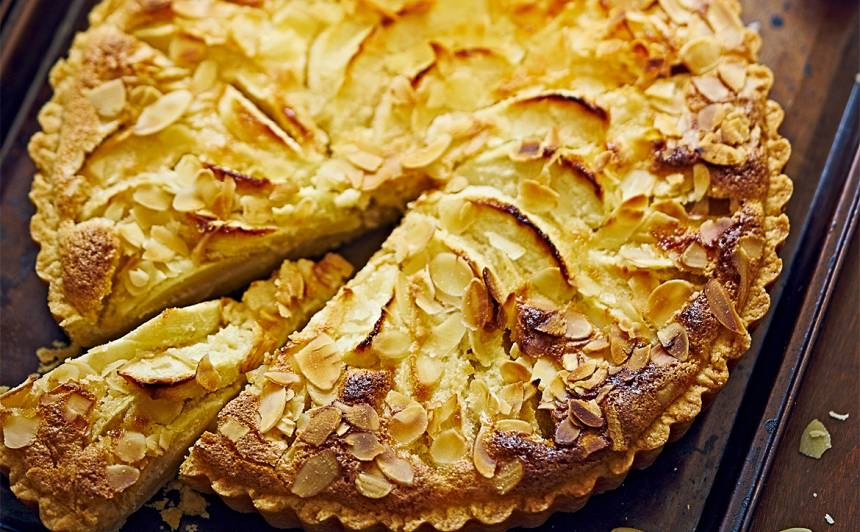

Receptes.
 Franču ābolu krēma kūka
Visādas receptes no āboliem un ogām.
Zemāk varēsiet atrast dažādus saitus, kur varēsiet apskatīt dažādas receptes, lai pagatavotu gardus ēdienus ar ogām.
-
Tvnet.lv receptes no ogām
TvNet
-
Gardedis.lv receptes augļi un ogu ēdieni
Gardedis
-
Delfi.lv receptes no augļiem un ogām
Delfi
No āboliem var pagatavot visdažādākos ēdienus un saldie ēdieni ir tie labākie, tāpēc esam sagatavojuši saites kur varat aplūkot receptes. Skat zemāk.
-
Fēniksfun.lv 25. gardas receptes no āboliem
Fēniksfun
-
Santa.lv 30. viskārdinošākās receptes no āboliem
Santa
-
Dieviete.lv 3. vienkāršas receptes no āboliem
Dieviete